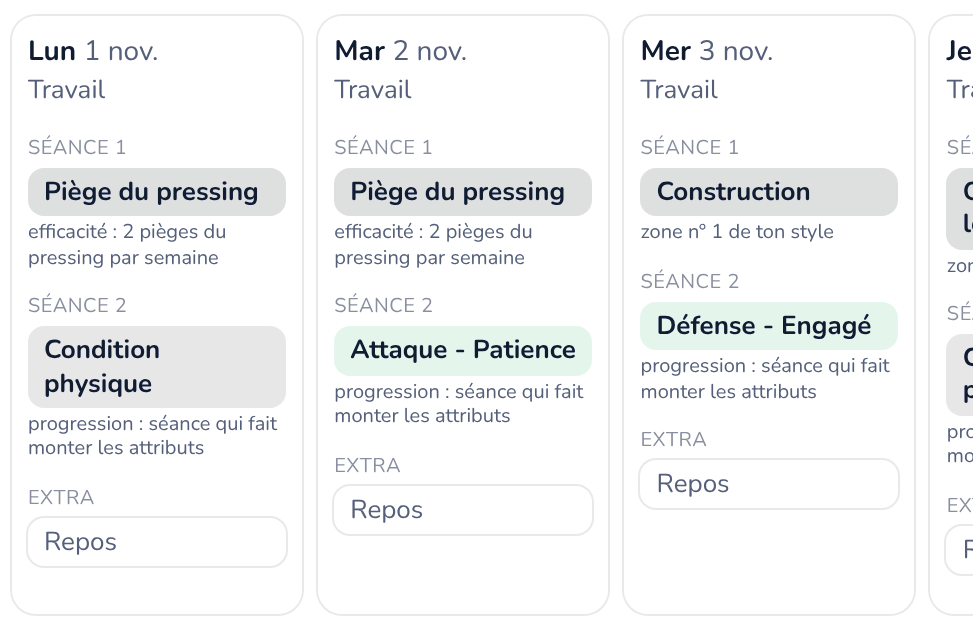
Tactique et entraînement
- Onze probable et rotations
- Efficacité de ta tactique
- Fiche de l'adversaire
- Entraînement et staff
Appli Windows gratuite pour Football Manager 27
FM Immersion rassemble tout ce que tu suivais dans ton fichier Excel : ton club, tes joueurs, tes résultats, ton mercato. Ton adjoint te dit quoi regarder, ta saison devient une gazette, et les visages générés deviennent photoréalistes.
Gratuit · open source (licence MIT) · sans compte · tout reste sur ton PC · Windows 10 et 11
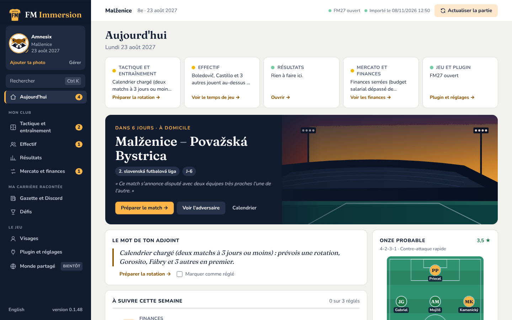
Pourquoi FM Immersion ?
Il t'aide à décider. C'est toi qui joues, toi qui choisis.
Aucune action n'est faite à ta place dans FM27.
Ta sauvegarde n'est jamais modifiée.
trois pièces, un seul but : t'aider à décider
Dans FM27, un petit plugin lit ton club en lecture seule : un instantané par jour de jeu, et le match en direct si tu le veux.
FM Immersion range tout dans une base sur ton PC et calcule les alertes : rotation à prévoir, contrat qui expire, joueur qui râle.
Chaque alerte t'emmène au bon écran. Tu cliques, tu lis, puis tu agis toi-même dans FM27.
Compo du jeu, cibles du mercato, moral, efficacité tactique, match en direct : chaque lecture se coche ou se décoche.
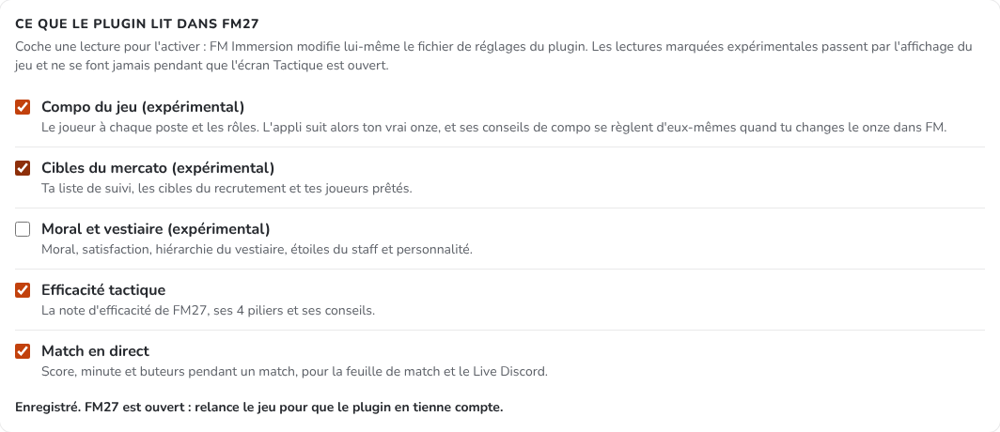
Chaque semaine, une liste courte de ce qui mérite ton attention, avec un bouton pour aller voir. Ctrl + K ouvre n'importe quel joueur ou écran.
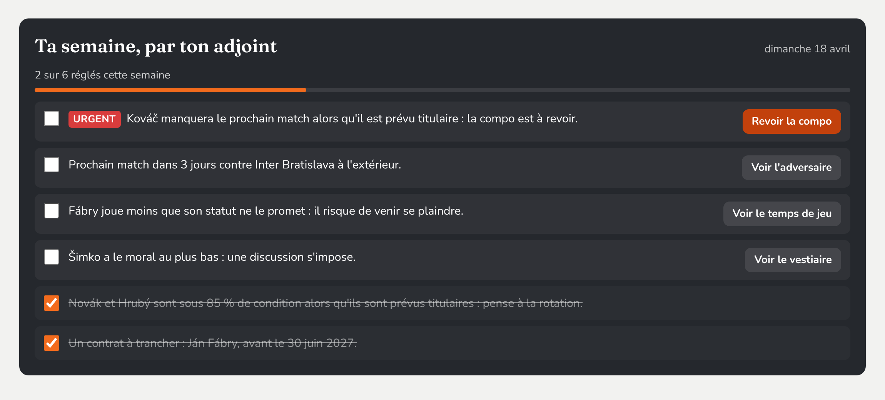
ton staff technique, lu dans ta partie

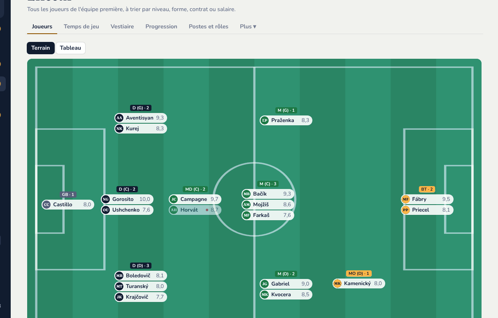
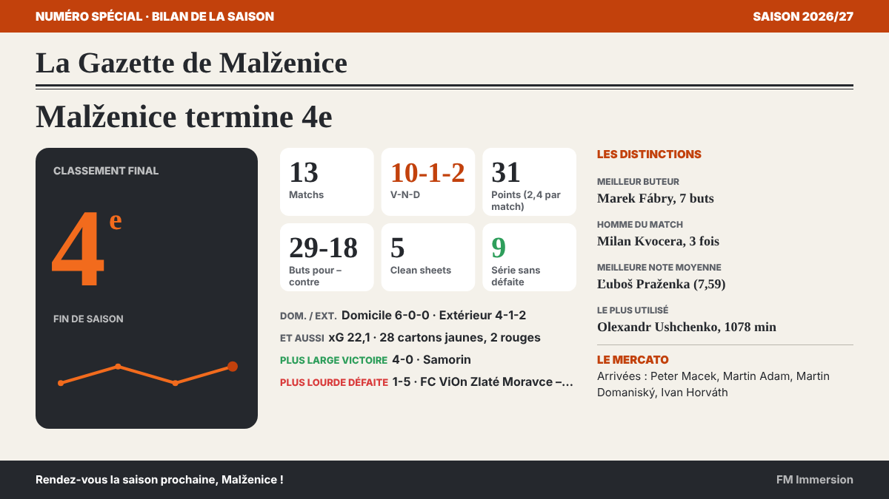
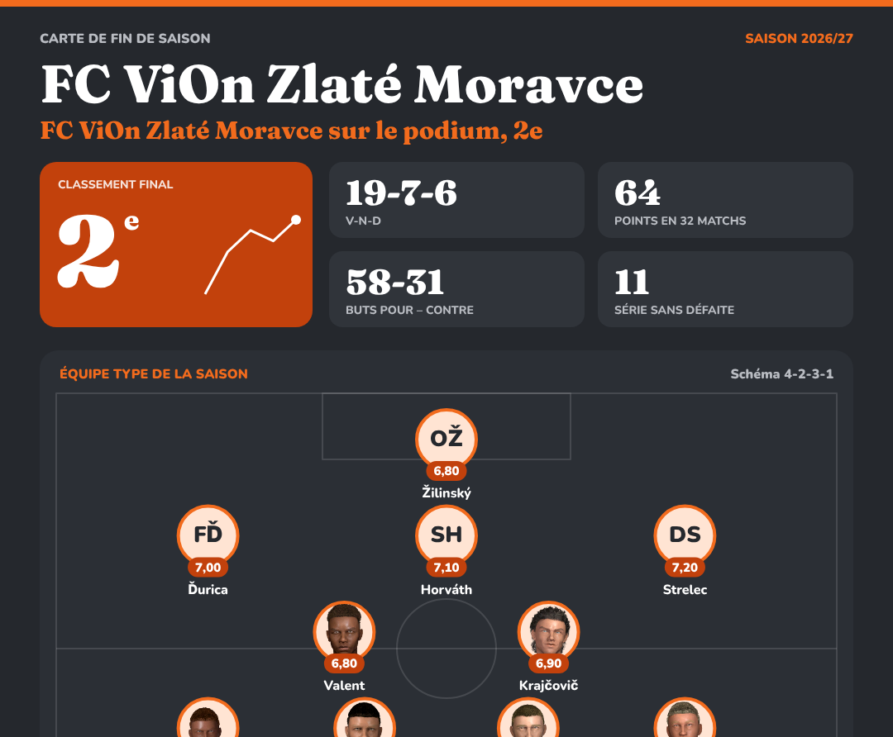
ta partie devient une histoire
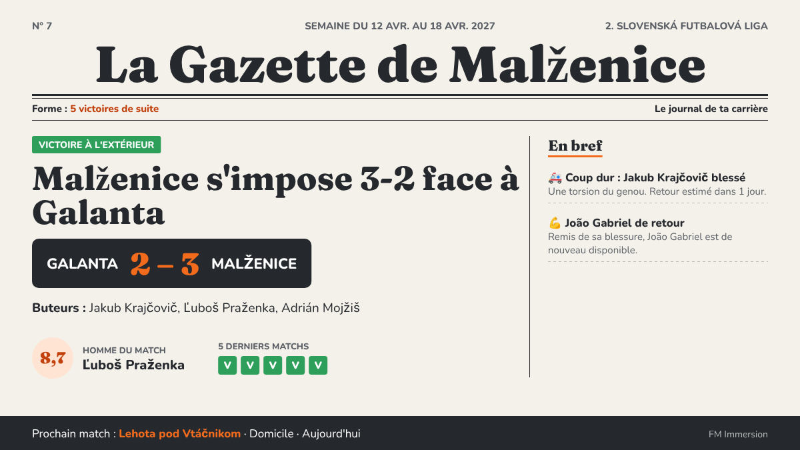
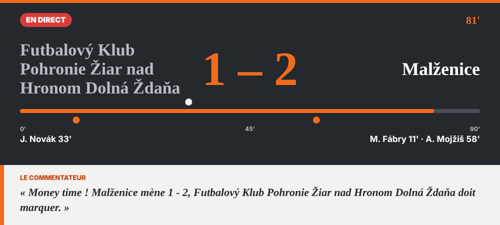
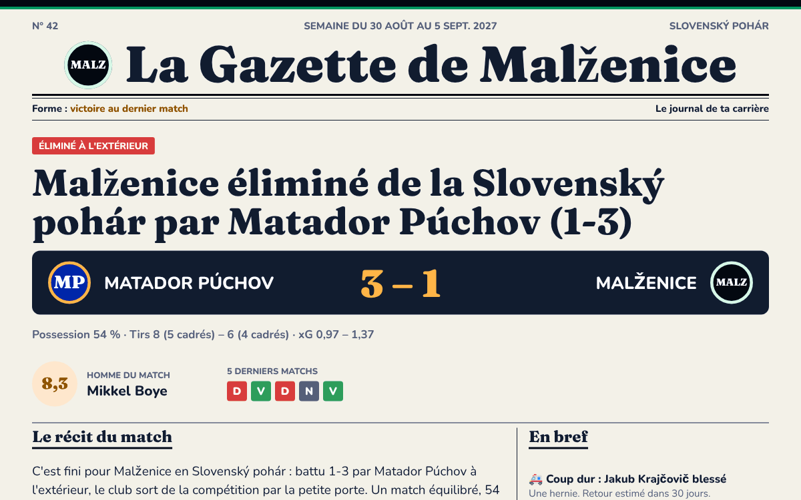
les jeunes et le staff générés, enfin crédibles
FM27 donne un visage en 3D à tous ceux qui n'ont pas de photo : jeunes du centre de formation, staff, entraîneurs. FM Immersion les remplace par des portraits photoréalistes, et les remet en place après une mise à jour Steam. Ta sauvegarde n'est pas touchée : seul le fichier des portraits du jeu est remplacé, sur ton clic, avec une copie de l'original.
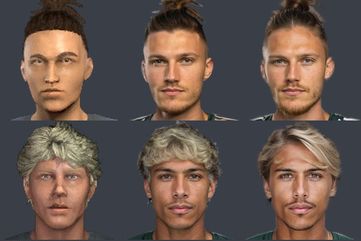
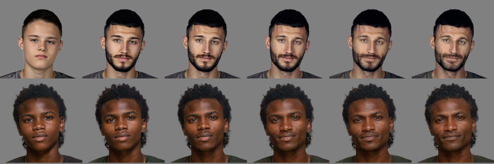
Dans FM27, coche « Utilisez des images pré-générées des joueurs et du personnel » dans les préférences pour voir les portraits.
arrive dans les prochaines versions
Ta sauvegarde n'est jamais modifiée.
Discord et IA : seulement si tu les actives.
Toute l'interface, dans les deux langues.
Open source, licence MIT. Pas de compte, pas de pub.
Windows 10 et 11 (64 bits) · Football Manager 27
FM.Immersion_x.y.z_x64-setup.exe de la dernière version.L'installeur n'est pas encore signé (la signature gratuite pour l'open source est en cours de demande). Windows peut afficher « Windows a protégé votre ordinateur » : clique sur Informations complémentaires, puis Exécuter quand même.
%APPDATA%\app.fmimmersion.desktopNon. Le plugin et l'appli lisent ton club en lecture seule ; rien n'est écrit dans ta sauvegarde ni dans la mémoire du jeu. Les seuls fichiers du jeu que l'appli change sont les portraits photoréalistes, quand tu cliques sur « Installer », et ils se retirent en un clic.
FM Immersion te montre ce que ton staff pourrait te dire, mais ne joue jamais à ta place : aucune action automatique, aucune modification d'attribut, de budget ou de résultat. C'est l'équivalent d'un tableur bien tenu.
Non. Tout tient dans une base sur ton PC. Internet ne sert qu'à chercher les mises à jour, à télécharger le plugin quand tu le demandes, et à Discord ou à l'IA si tu les actives.
Non, FM Immersion reste sur Windows.
FM Immersion ne collecte, ne stocke à distance ni n'envoie aucune donnée personnelle. Tes parties restent dans une base SQLite sur ton PC (%APPDATA%\app.fmimmersion.desktop\fm-immersion.db). Les fichiers de sauvegarde de FM27 ne quittent jamais ton ordinateur.
github.com/amnesix-nt/fm-immersion/releases) pour savoir s'il existe une nouvelle version.discord.com/api/webhooks/), et seulement ce que tu as choisi : la gazette quand tu cliques sur « Envoyer sur Discord » ou chaque semaine si tu as coché l'envoi automatique, les dépêches (recrue, départ, blessure longue) sur ton clic ou automatiquement si tu l'as coché, et le direct de tes matchs si tu l'as activé. Un certificat de défi (pseudo choisi, clubs, résultats, âges et nationalités des joueurs alignés) n'y part que quand tu cliques sur « Partager sur Discord ».Si tu l'actives, la gazette et les commentaires du direct sont écrits par l'IA que tu choisis :
127.0.0.1:11434 et ne quitte pas ton ordinateur ;Le plugin et l'appli lisent FM27 en lecture seule, seulement quand tu le demandes ou selon les lectures que tu as cochées. Ils n'écrivent rien dans le jeu et n'injectent rien.
Ce site n'utilise ni cookie, ni outil de statistiques, ni script, ni police ou image venant d'ailleurs. Il est hébergé par GitHub Pages, qui peut enregistrer ton adresse IP pour la sécurité du service (voir la déclaration de confidentialité de GitHub).
Les versions publiées seront signées gratuitement grâce à SignPath une fois le projet accepté par la SignPath Foundation. Seuls les fichiers construits par GitHub Actions à partir du dépôt public seront signés, chaque signature étant approuvée à la main. Le détail est dans le README du projet.